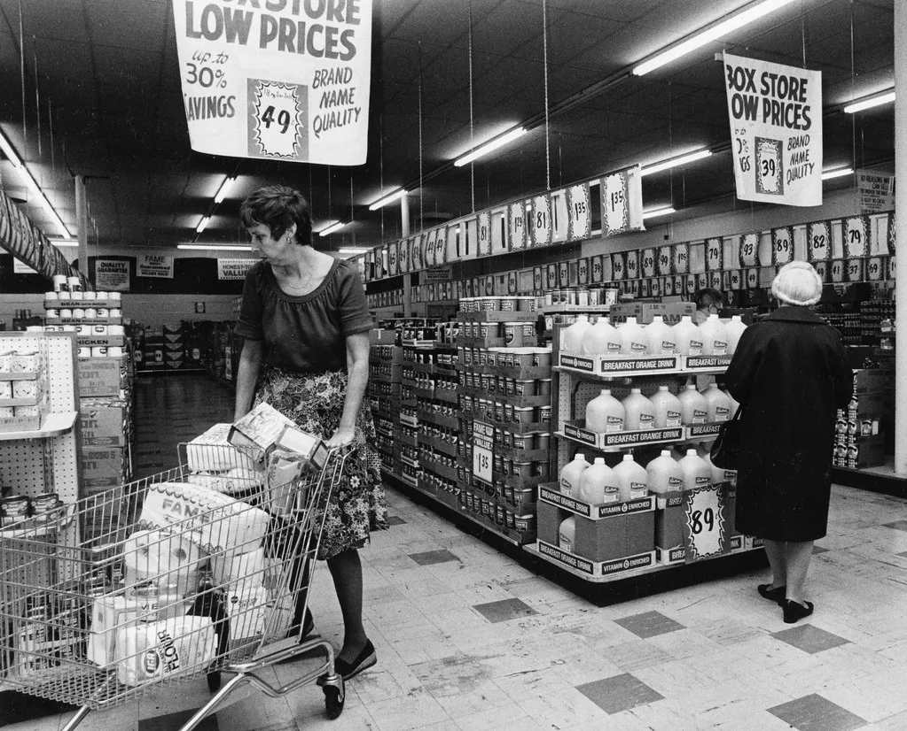
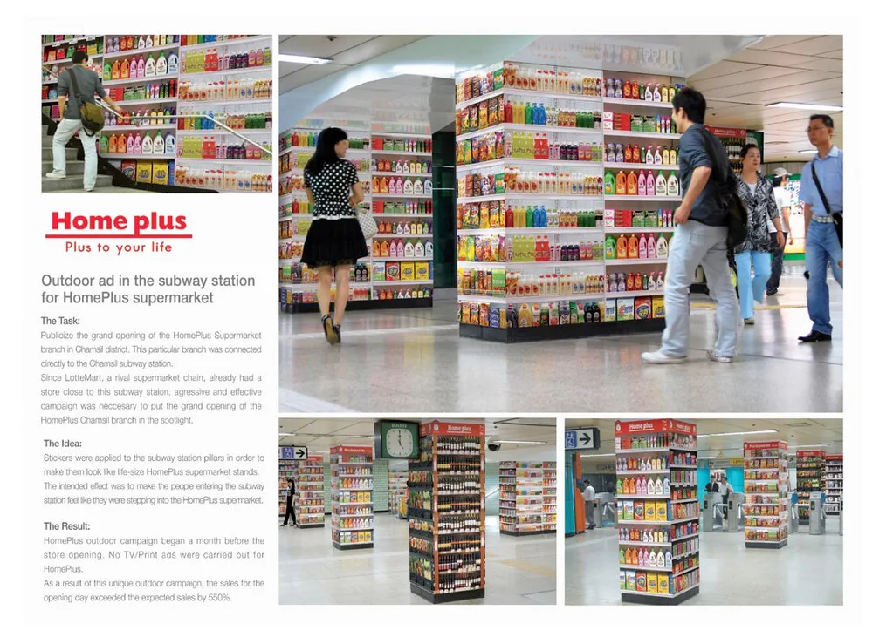

홈플러스 회생계획안 '운명의 날'…서울회생법원서 채권단 표결
서울회생법원이 2일 오후 3시 홈플러스의 회생계획안을 표결에 부치는 관계인집회를 열었다. 유동성 위기로 기업회생 절차를 밟아 온 대형마트 홈플러스의 존속 여부를 사실상 가르는 절차다. 법정에는 회생담보권자와 회생채권자, 주주 등 이해관계인이 모여 회사가 제출한 채무 상환 계획에 찬반 의사를 밝혔다.
회생계획안이 통과되려면 회생담보권자의 4분의 3(75%), 회생채권자의 3분의 2(66.7%), 주주의 2분의 1(50%) 이상이 동의해야 한다. 한 조라도 문턱을 넘지 못하면 부결이다. 홈플러스는 채권자들의 요구를 반영해 상환 조건을 손질한 수정 계획안을 지난달 법원에 냈고, 표결을 앞두고 막판 설득 작업을 벌였다.

최대 쟁점은 급여·물품대금·세금처럼 우선 변제해야 하는 공익채권의 분할 상환에 채권자들이 동의하느냐다. 회생절차가 진행되는 동안 공익채권 규모가 불어난 탓에, 회사는 이를 한꺼번에 갚을 여력이 없어 여러 해에 걸쳐 나눠 갚는 방안을 제시했다. 상품을 납품해 온 협력업체와 매장을 빌려준 임대인 등은 대금을 언제, 얼마나 돌려받을 수 있을지 불확실하다며 반발해 왔다. 법원은 이날 가결이 이뤄지지 않더라도 나흘 뒤까지 표결을 이어갈 수 있도록 기일을 열어놨고, 그 사이 회사와 주관사가 개별 채권자 설득에 나설 것으로 보인다.
홈플러스는 2015년 사모펀드 운용사 MBK파트너스에 약 7조원에 인수됐다. 이후 점포 매각과 자산 유동화가 이어졌지만 재무 부담을 넘지 못해 회생절차를 밟게 됐고, 그 과정에서 대주주 MBK와 최대 채권자인 메리츠금융그룹 사이에 책임 공방이 벌어졌다. 올해 법원이 운영자금 부족을 이유로 회생절차 폐지를 결정했다가, 2000억원 규모의 긴급 운영자금(DIP) 지원이 합의되면서 절차가 되살아났다. 이 자금은 MBK 측이 지급보증을 서고 메리츠가 집행하는 구조로 마련됐다.
회생계획안이 가결되면 법원은 특별한 사정이 없는 한 이날 곧바로 인가 결정을 내린다. 이 경우 홈플러스는 계획에 따라 빚을 갚아 나가면서 정상화와 매각을 추진하게 된다. 반대로 부결되면 법원은 계획안을 강제로 인가할지, 아니면 회생절차를 폐지할지를 검토한다. 절차가 폐지되면 파산 수순으로 이어질 수 있다.

홈플러스에는 직접 고용 인력과 협력업체 직원, 임대 매장 종사자를 합쳐 많은 인원이 일하고 있어, 표결 결과는 고용에도 직접적인 영향을 준다. 전국의 점포와 물류센터, 납품 중소기업, 그리고 상품권을 보유한 소비자까지 이해관계가 얽혀 있어 유통업계와 채권시장이 결과를 주시했다. 앞서 조사위원인 회계법인은 회사를 계속 운영할 때보다 청산할 때의 가치가 더 높다는 취지의 보고서를 낸 바 있어, 채권자 설득이 한층 어려운 상황이었다.
홈플러스 사태는 사모펀드가 인수한 대형 유통기업이 회생절차까지 간 대표적 사례로 꼽힌다. 인수 과정의 차입 부담과 온라인 쇼핑으로의 소비 이동, 대형마트 영업 규제 등이 복합적으로 작용했다는 분석이 나온다. 정부와 지방자치단체도 대량 실업 가능성과 지역 상권 영향을 우려해 상황을 지켜보고 있다. 이번 표결 결과에 따라 남은 점포의 운영 방식과 매각 협상의 방향, 협력업체 대금 지급 일정도 크게 달라질 전망이며, 유통업계에서는 다른 오프라인 대형 유통업체의 구조조정 논의에도 영향을 줄 수 있다는 관측이 나온다.